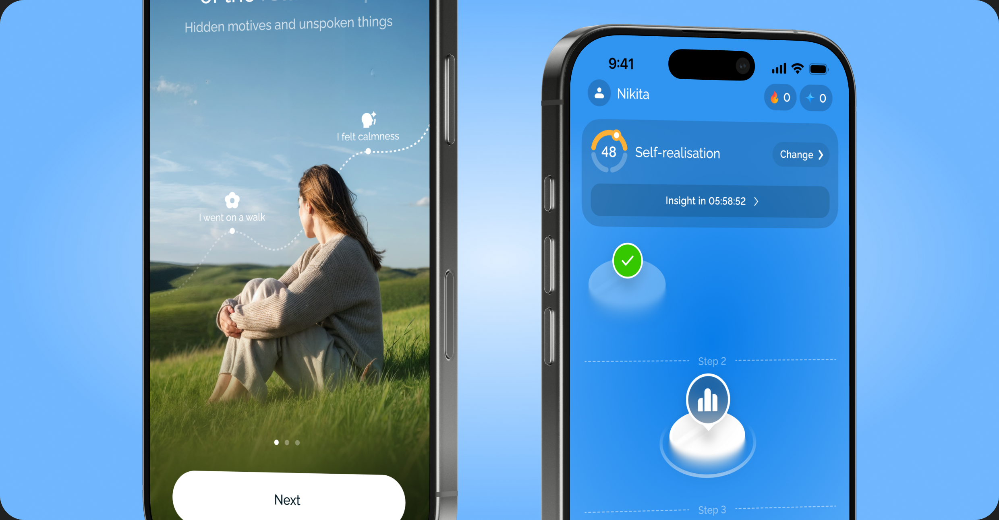
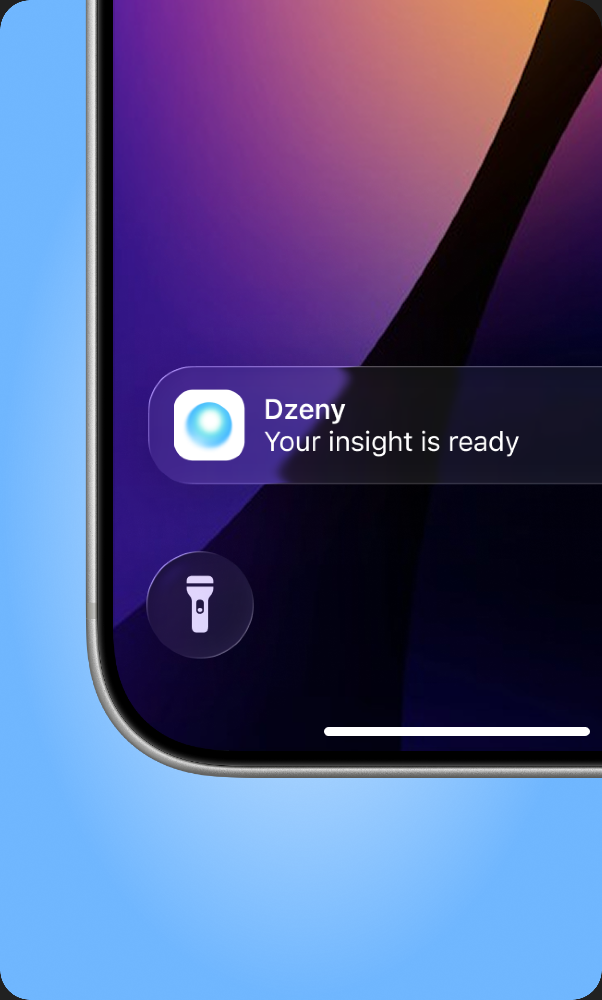
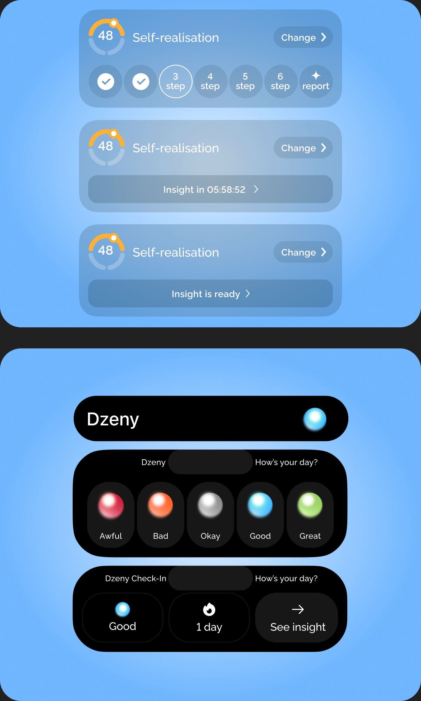
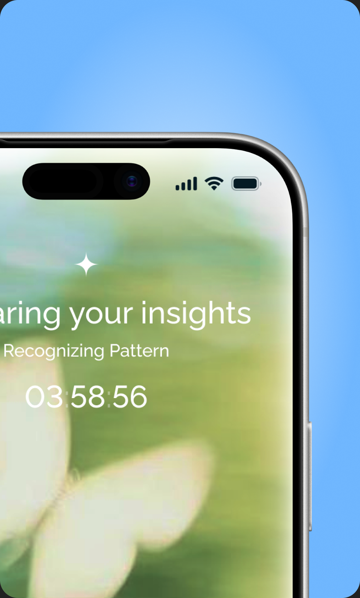
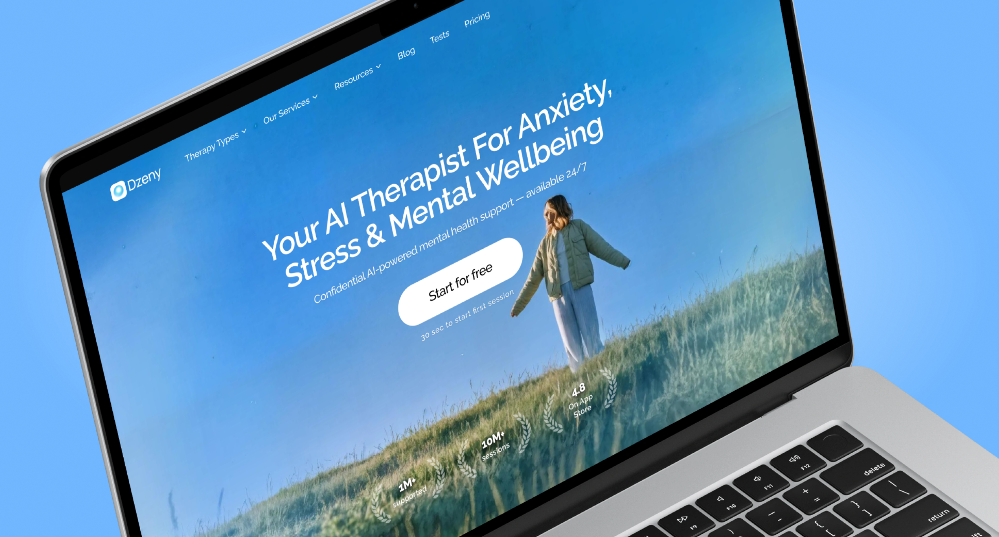
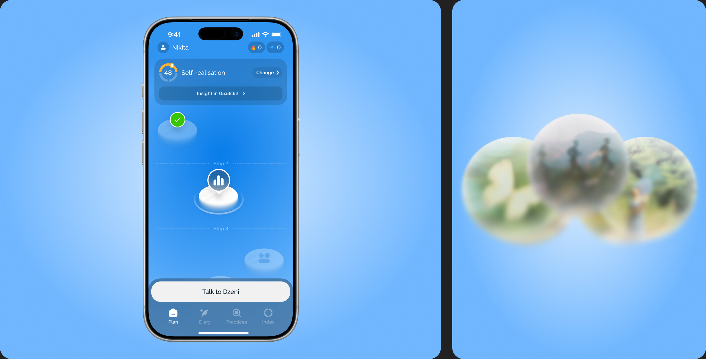
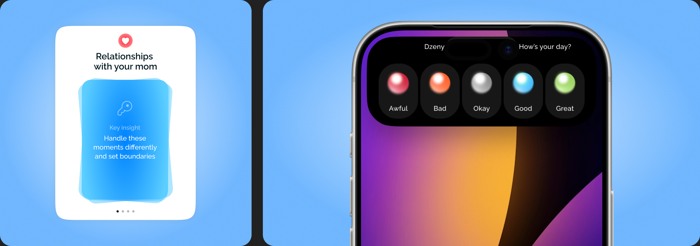
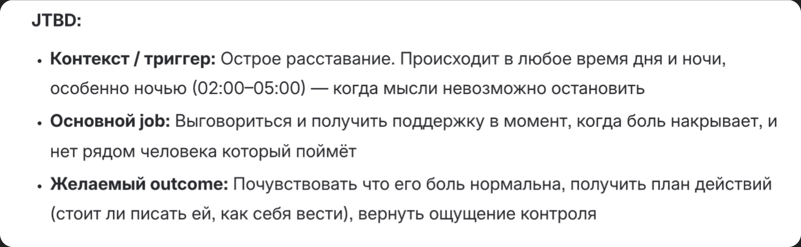
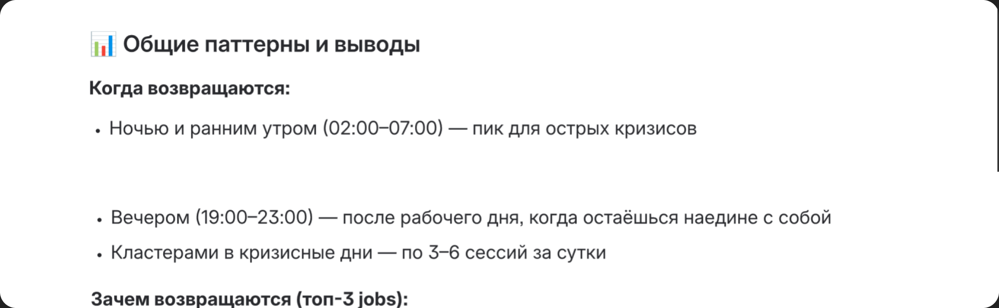

Dzeny is AI Mental Health app that provides AI-based psychological support through a gamified experience, helping users get guidance and track progress



Problem
In the app, users actively interacted with the app in the first couple of days, but towards the end of the week, their activity decreased significantly
Business goal
To increase user engagement and retention through a gamified experience and a more converting top funnel — to do this, it was necessary to increase the effectiveness of the landing page and retention through regular interaction with the app

Role and Responsibility
I have been working as product designer in main mobile app and fully redesigned landing page via vibecoding in a team of lead-designer, PM, CEO and development team


Research
We have been talking with 5-6 users at different age and wealth about motivation to use our app at interviews
Conclusions from the research
We found out that most users feel uncomfortable when they found themselves in social relationships (it might be relationships with parents or coworkers). With that information we decided to build a more social interaction experience for the user. These pains will be a huge boost to D7 retention.
We decided to focus on solutions that motivated the user to return to the app later. For example, features built around deferred value
Tools
Figma, Cursor, Next.JS, Claude


Hypothesis
- ChatGPT's retention in the mental health case is 4 months. Our current R1 is 1.4 months. If we make the chat interaction more casual and integrate our advantages (proactivity, user context), the retention should be at least on par with ChatGPT
- If we introduce a 6–8h delayed "insight ready" cycle after a session/practice, then D7 retention increases toward Finch's 37% benchmark, because the app now creates anticipation between crises instead of depending on the user's next emotional crisis to return. Metric: D7 retention, feature vs control cohort
- If the loop is running, then average sessions/day increases toward ~2 (end-of-day session + insight-triggered return), because the cycle manufactures a second natural touchpoint. Metric: sessions/day, before vs after
Why we decided to stay at this solution
Since Dzeny is a startup, the basic product process here was modified — we fully tested the metrics immediately on the market. Therefore, instead of telling a story, I will simply highlight the main ways in which we operated
- Data Research and JTBD
- Hypothesis Generation
- Based on metrics solution
Results
- WAU 5% ↑
- D7 Retention 12% ↑
Three retention initiatives: delayed-insight loop, iOS Live Activities for the emotion diary, and a conversational retention study. Retention study includes a go/no-go gate based on C0 and D7 movement for resource allocation. Split 21 hypotheses by testing cost; four required no new UI, allowing early effectiveness assessment before investing in Live Activities designs. Outcome: a coherent retention strategy with a prioritized experiment roadmap, minimizing assumptions.